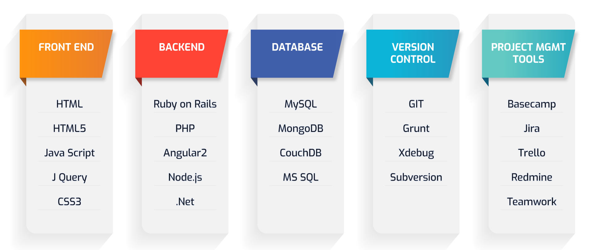

Home
Courses
Student Review
Blogs
Placements
Home
Courses
Student Review
Blogs
Placements
Home
Courses
Student Review
Blogs
Placements


The complete roadmap for full-stack development
The complete roadmap for full-stack development in 2023 Get to know the basic programming languages you will need to know about if you’re looking for a career in
full-stack development
Becoming a full stack web developer seems to be a daunting task, especially if you are completely new to the field of coding. As a beginner, you might think that you have a
whole lot to learn within a short span of time.
The languages, frameworks, libraries and databases along with everything else required are considered to be a list of tools for full stack web development. The easiest way
to begin any work is to strategize with a roadmap. A roadmap is the best way to kick-start your attempt to become a full stack web developer.
Your objective should be to learn the bare minimum skill-set required so that you can start experimenting and honing your learned skills. Once you have mastered the basics,
you can go ahead and learn full stack technologies which will give you an edge over others. Follow a structured path and equip yourself steadily rather than trying to
learn the entire web development spectrum.
In this blog, you will find a complete full-stack roadmap of 2023. It is the go-to guide for organizing and selecting technologies to learn. The roadmap is similar to
the full-stack roadmap of 2020 that we wrote about earlier.
This article will mainly benefit the noobs but is also useful for professional coders looking to become full-stack web developers. If you already have knowledge of
some of the technologies we are going to talk about here, skip to the sections that will be useful to you. Feel free to customize this roadmap to suit your needs.
Front-end technology roadmap for full-stack web development
Below we have listed the common tools that you need to master as a full-stack developer. The roadmap herein will serve as a learning path for you if you want to make a career in it.
Html
HyperText Markup Language is the most basic and must know for any website you are creating. You define and structure the content of a website.
CSS
CSS is used for styling websites and adding layouts, fonts and colours.
SQL
Structured Query Language is a basic language used for database management.
Java
It is a object oriented programming language used for backend
JavaScript
It is used for both backend and frontend
BootStrap
It is a frameWork for creation of websites and web applications